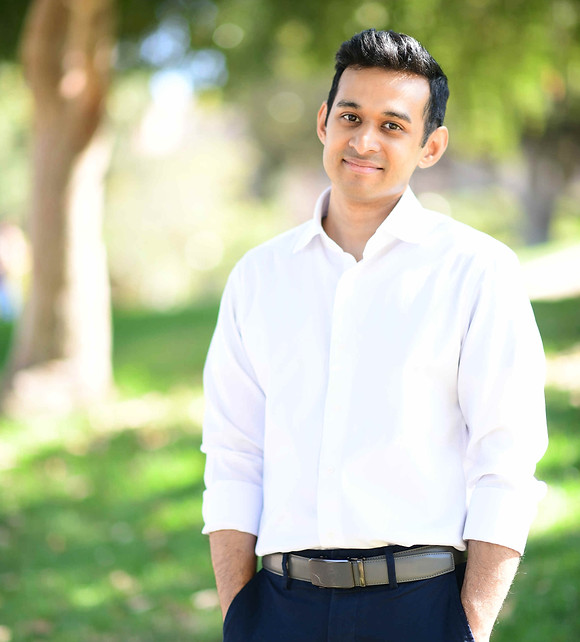

Auyon Siddiq
Associate Professor of Decisions, Operations and Technology Management
UCLA Anderson School of Management
I am an Associate Professor of Decisions, Operations and Technology Management at the UCLA Anderson School of Management. I study incentive and market design using methods from optimization, machine learning, econometrics, and game theory. Recent contextual areas include digital labor platforms and urban sustainability.
I'm teaching a new MBA class called Science and Strategy of Artificial Intelligence. I have also taught core statistics in the full-time MBA program and core optimization in the Master of Science in Business Analytics (MSBA) program. In 2020, I was named to Poets & Quants' list of the Best 40-Under-40 Business School Professors.
Before joining UCLA, I received a PhD in Operations Research from the University of California, Berkeley.
Publications
Working Papers
-
Empirical Market Design in Surplus Food Marketplaces. with Y. Dong and J. Zhang. Major Revision, Operations Research.
- Accepted to MSOM Sustainable Operations SIG Day, 2026.
- Best Paper Presentation Award, Early Career Sustainability Workshop, 2026 (Dong).
- Second Place, POMS College of Sustainable Operations Student Paper Competition, 2026 (Dong).
Accepted or Published
Operations journals
-
Platform Disintermediation: Information Effects and Pricing Remedies. with S. Sekar. Operations Research, forthcoming.
- Accepted to 25th ACM Conference on Economics and Computation (EC '24).
- Accepted to MSOM Technology, Innovation, and Entrepreneurship (TIE) SIG Day, 2024.
-
Planning Bike Lanes with Data: Ridership, Congestion, and Path Selection. with S. Liu and J. Zhang. Management Science (2025), Vol. 71, No. 9: 7631–7654.
- Winner, INFORMS Public Sector Operations Research (PSOR) Best Paper Award, 2023.
- Winner, POMS College of Sustainable Operations Student Paper Competition, 2022 (Zhang).
- Second Place, INFORMS Service Science Best Student Paper Award, 2022 (Zhang).
- Second Place, Section on Location Analysis Best Student Paper Award, 2023 (Zhang).
- Finalist, MSOM Society Award for Responsible Research in Operations Management, 2025.
- Finalist, INFORMS Data Mining and Decision Analytics Best Paper Award (Applied Track), 2022.
- Accepted to MSOM Sustainable Operations SIG Day, 2022.
-
Discovering Causal Models with Optimization: Confounders, Cycles, and Instrument Validity. with F. Eberhardt and N. Kaynar. Management Science (2025), Vol. 71, No. 4: 3283–3302.
- Second Place, ADIA Lab Best Paper Award, 2024 (Prize: $30,000).
- Estimating Effects of Incentive Contracts in Online Labor Platforms. with N. Kaynar. Management Science (2023), Vol. 69, No. 4: 2106–2126.
- Ride-hailing Platforms: Competition and Autonomous Vehicles. with T. Taylor. Manufacturing & Service Operations Management (2022), Vol. 24, No. 3: 1511–1528.
- Partnerships in Urban Mobility: Incentive Mechanisms for Improving Public Transit Adoption. with C. S. Tang and J. Zhang. Manufacturing & Service Operations Management (2022), Vol. 24, No. 2: 956–971.
-
Data-Driven Incentive Design in the Medicare Shared Savings Program. with A. Aswani and Z-J. M. Shen. Operations Research (2019), Vol. 67, No. 4: 1002–1026.
- Second Place, INFORMS Health Application Society Pierskalla Best Paper Award, 2016.
-
Inverse Optimization with Noisy Data. with A. Aswani and Z-J. M. Shen. Operations Research (2018), Vol. 66, No. 3: 870–892.
- Berkeley IEOR Katta G. Murty Prize, 2016.
-
Robust Defibrillator Deployment Under Cardiac Arrest Location Uncertainty via Row-and-Column Generation. with T. C. Y. Chan and Z-J. M. Shen. Operations Research (2018), Vol. 66, No. 2: 358–379.
- Winner, Canadian Operational Research Society Student Paper Competition, 2014.
- Second Place, INFORMS Health Applications Society Student Paper Competition, 2017.
Practitioner and medical journals
- Fairness in Crowdwork: Making the Human AI Supply Chain More Humane. with M. Gonzalez Cabello, C. Corbett, and C. Hu. Business Horizons (2025), Vol. 68, No. 5: 645–657.
-
Shield-Net: Matching Supply with Demand for Face Shields During the COVID-19 Pandemic. with R. Alcock and J. Boutilier. INFORMS Journal on Applied Analytics (2022), Vol. 52, No. 6: 471–582.
- Finalist, Doing Good with Good OR Student Paper Competition, 2021 (Alcock).
- Modeling the Impact of Public Access Defibrillator Range on Cardiac Arrest Coverage. with S. C. Brooks and T. C. Y. Chan. Resuscitation (2013), Vol. 84, No. 7: 904–909.
Teaching
- Data and Decisions (MGMTFT 402), Full-Time MBA, Fall 2018 - present.
- Optimization (MGMTMSA 403), Master of Science in Business Analytics, Fall 2019 - present.
- Science and Strategy of Artificial Intelligence (MGMT298D), Full-Time MBA, Spring 2026.
Students
- Niuniu Zhang (exp. 2029)
- Alexandra Yizhuo Dong (exp. 2028)
- Martin Gonzalez Cabello (exp. 2027, Dissertation Co-Chair with C. Corbett)
- Jingwei Zhang (2023, Dissertation Co-Chair with C. S. Tang)
- Placement: Assistant Professor, SC Johnson College of Business, Cornell University.
- Nur Kaynar (2022, Dissertation Chair)
- Placement: Assistant Professor, SC Johnson College of Business, Cornell University.
Awards
- Management Science Meritorious Service Award, 2023.
- Dean's Prize for Outstanding Faculty Mentorship of Ph.D. Students, 2023.
- Eric and E Juline Faculty Excellence in Research Award, 2022.
- M&SOM Meritorious Service Award, 2020, 2022 - 2024.
- Poets & Quants Best 40-Under-40 Business School Professors, 2020.
- Berkeley Haas EMBA Outstanding Graduate Student Instructor Award, 2016, 2018.
- NSERC Postgraduate Scholarship - Doctoral, 2014 - 2017.
- UC Berkeley Teaching Effectiveness Award, 2015.
- Berkeley IEOR Outstanding Graduate Student Instructor Award, 2015.
- NSERC Postgraduate Scholarship - Masters, 2012.
- NSERC Undergraduate Student Research Award, 2007, 2008, 2010.
- Canadian National Millennium Scholarship, 2006 - 2010.
- Dalhousie University Chancellor's Scholarship, 2006 - 2009.
Grants
- UCLA Anderson Morrison Center Grant, 2024 - 2025.
- UCLA Senate COR Faculty Grant, 2024 - 2025.
- UCLA Society of Hellman Fellows Award, 2022 - 2023.
- UCLA Easton Center Faculty Research Award, 2022 - 2023.
- Co-Principal Investigator, National Science Foundation (RAPID), $100,000, 2020 - 2021.
Talks
- Sloan School of Management, MIT, 2025.
- Stanford Graduate School of Business, 2025.
- Kenan-Flagler Business School, UNC-Chapel Hill, 2025.
- Stern School of Business, New York University, 2025.
- Columbia Business School, 2025.
- Yale School of Management, 2025.
- Wisconsin School of Business, 2025.
- Ross School of Business, University of Michigan, 2024.
- Haas School of Business, University of California, Berkeley, 2023.
- Johnson College of Business, Cornell University, 2023.
- Fuqua School of Business, Duke University, 2023.
- Wharton School, University of Pennsylvania, 2023.
- Rotman School of Management, University of Toronto, 2023.
- Haas School of Business, University of California, Berkeley, 2022.
- Rotman OM Young Scholar Seminar Series, University of Toronto, 2022.
- Logistics Research Seminar, Amazon, 2022.
- Tuck School of Business, Dartmouth College, 2021.
- Data Science Lab, MIT, 2020.
- Department of Mechanical and Industrial Engineering, University of Toronto, 2019.